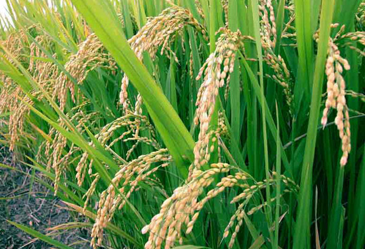
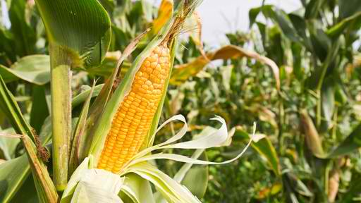
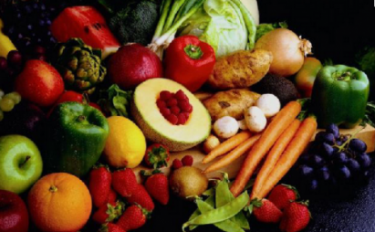
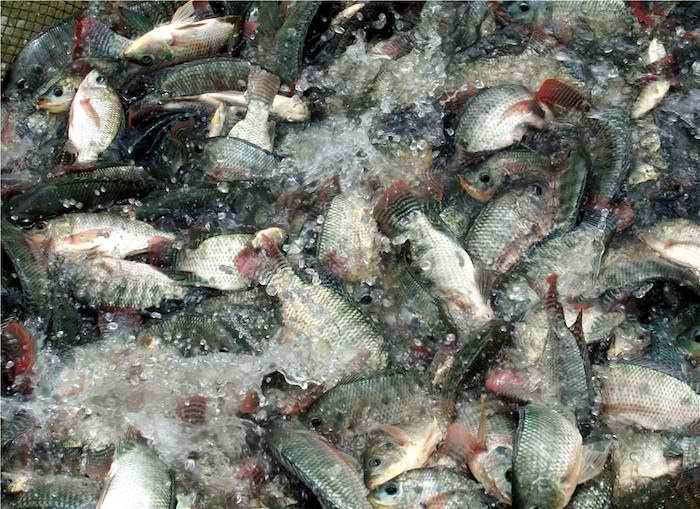
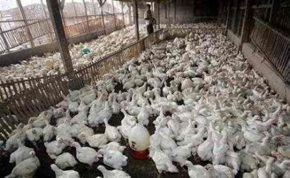
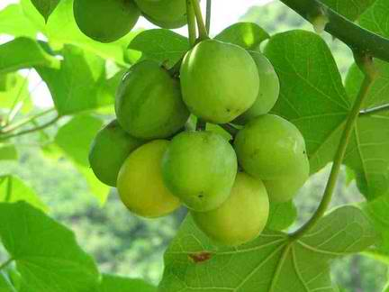

Mga Pagpipilian

Palay
- Mga Dapat Isaalang-alang sa Pagpili ng Pamamaraan sa Pagtatanim ng Palay
- Mga Hakbang sa Produksyon ng Palay
- Siping Kaalaman Para sa Pagpapalayan
- Hybrid Rice Production Technology

Mais
- Corn Flyers
- Corn Fact
- Mga Hakbang Tungo sa Masaganang Ani ng Mais
- White Corn Grits Brochure
- Young Corn
- Technoguide on Cassava Production
- Cassava Recipes

High Value Crops
VEGETABLES
- Ampalaya (in Filipino)
- Cabbage
- Gabi(in Filipino)
- Green Leafy Vegetables
- Kabute (Mushroom)(in Filipino)
- Kalabasa (Squash)(in Filipino)
- Kangkong
- Kamatis (Tomato) (in Filipino)
- Lettuce
- Okra (in Filipino)
- Patola (in Filipino)
- Peanut (in Filipino)
- Pipino (Cucumber) (in Filipino)
- Potato Patatas(in Filipino)
- Saluyot Benefits
- Sigarilyas (in Filipino)
- Sitao (in Filipino)
- Super Peanut (in Filipino)
- Sweet Potato
- Talong(in Filipino)
- Ubi
- Upo(in Filipino)
- Banana
- Calamansi
- Coffee
- Citrus Fruits
- Cashew
- Durian
- Durian (Lower Induction in Durian)
- Guapple
- Guyabano
- Jackfruit
- Mango
- Mangosteen
- Papaya
- Watermelon
- Garlic
- Ginger (Luya)(in Filipino)
- Hot Pepper
- Black Pepper
- Sweet Pepper
- Orchids
- Chrysanthemum
- Alimango (Mudcrab) (in Filipino)
- Hito (Catfish) (in Filipino)
- Hipon (Shrimp)(in Filipino)
- Milk Fish Milk Fish (Bangus)
- Tilapia
- Backyard Cattle Fattening
- Duck Raising
- Goat Raising
- Poultry Raising
- Quail Raising
- Swine Raising
- Cassava Fact
- Jatropha
PRUTAS
SPICES
CUTFLOWERS

Isdaan

Livestock

Iba pa